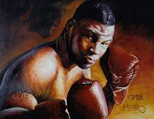
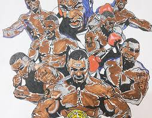
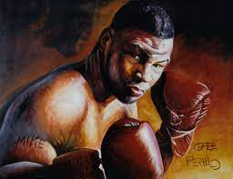
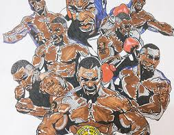

Early Life
Michael Gerard Tyson was born into a Catholic family in Fort Greene, Brooklyn, New York City on June 30, 1966. He has an older brother named Rodney (born c. 1961) and an older sister named Denise, who died of a heart attack at age 24 in February 1990. Tyson's mother, born in Charlottesville, Virginia was described as a promiscuous woman who might have been a prostitute. Tyson's biological father is listed as "Purcell Tyson", a "humble cab driver" (who was from Jamaica) on his birth certificate but the man Tyson had known as his father was a pimp named Jimmy Kirkpatrick. Kirkpatrick was from Grier Town, North Carolina (a predominantly black neighborhood that was annexed by the city of Charlotte), where he was one of the neighborhood's top baseball players. Kirkpatrick married and had a son, Tyson's half-brother Jimmie Lee Kirkpatrick, who would help to integrate Charlotte high school football in 1965. In 1959, Jimmy Kirkpatrick left his family and moved to Brooklyn, where he met Tyson's mother, Lorna Mae (Smith) Tyson. Kirkpatrick frequented pool halls, gambled and hung out on the streets. "My father was just a regular street guy caught up in the street world," Tyson said. Kirkpatrick abandoned the Tyson family around the time Mike was born, leaving Tyson's mother to care for the children on her own. Kirkpatrick died in 1992.

Rise to Fame
On November 22, 1986, Tyson was given his first title fight against Trevor Berbick for the World Boxing Council (WBC) heavyweight championship. Tyson won the title by TKO in the second round, and at the age of 20 years and 4 months became the youngest heavyweight champion in history. He added the WBA and IBF titles after defeating James Smith and Tony Tucker in 1987. Tyson's dominant performance brought many accolades. Donald Saunders wrote: "The noble and manly art of boxing can at least cease worrying about its immediate future, now [that] it has discovered a heavyweight champion fit to stand alongside Dempsey, Tunney, Louis, Marciano, and Ali.
Tyson intimidated fighters with his strength, combined with outstanding hand speed, accuracy, coordination and timing. Tyson also possessed notable defensive abilities, holding his hands high in the peek-a-boo style taught by his mentor Cus D'Amato to slip under and weave around his opponent's punches while timing his own. Tyson's explosive punching technique was due in large part to crouching immediately prior to throwing a hook or an uppercut: this allowed the 'spring' of his legs to add power to the punch. Among his signature moves was a right hook to his opponent's body followed by a right uppercut to his opponent's chin. Lorenzo Boyd, Jesse Ferguson and José Ribalta were each knocked down by this combination.
Tyson had three fights in 1988. He faced Larry Holmes on January 22, 1988, and defeated the legendary former champion by KO in the fourth round. This was the only knockout loss Holmes had in 75 professional bouts. In March, Tyson then fought contender Tony Tubbs in Tokyo, Japan, fitting in an easy second-round TKO victory amid promotional and marketing work.
On June 27, 1988, Tyson faced Michael Spinks. Spinks, who had taken the heavyweight championship from Larry Holmes via fifteen-round decision in 1985, had not lost his title in the ring but was not recognized as champion by the major boxing organizations.
Holmes had previously given up all but the IBF title, and that was eventually stripped from Spinks after he elected to fight Gerry Cooney (winning by TKO in the fifth round) rather than IBF Number 1 Contender Tony Tucker, as the Cooney fight provided him a larger purse.
However, Spinks did become the lineal champion by beating Holmes and many (including Ring magazine) considered him to have a legitimate claim to being the true heavyweight champion. The bout was, at the time, the richest fight in history and expectations were very high. Boxing pundits were predicting a titanic battle of styles, with Tyson's aggressive infighting conflicting with Spinks's skillful out-boxing and footwork. The fight ended after 91 seconds when Tyson knocked Spinks out in the first round; many consider this to be the pinnacle of Tyson's fame and boxing ability.

 


